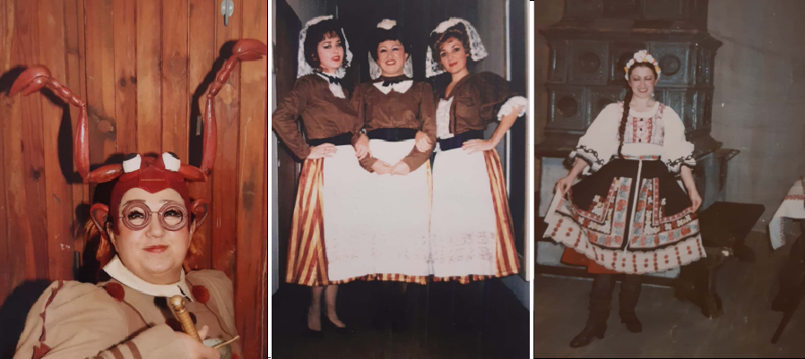
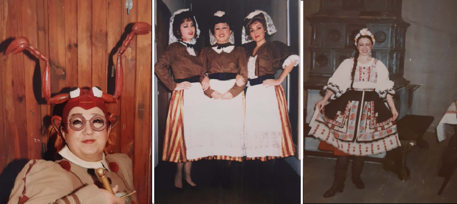
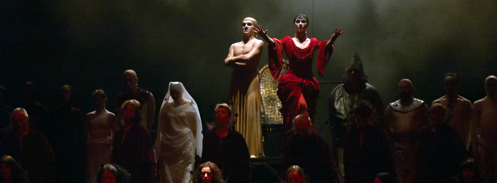
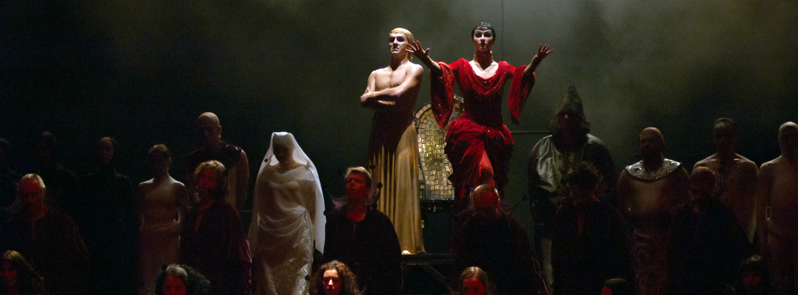

 


 --------------------------->
--------------------------->
....LOVE . . TRAGEDY ... LAUGHT .. .
All human passions are represented in Opera
Would You like to Sing like they sing on the Stage?
I can Help you.!
Classical opera singing classes & piano!
Maybe You want to start, but dont know where ?? . .
Maybe you're worried ,that your voice its not clean or strong enaught ?0.. .
Or . . maybe you think, that you are too young Or a bit too old To start?
Another headline
And an even wittier subheading.